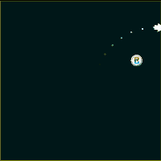

Actions Library (ssk.actions.*) (Part2)
The actions library is a collection of helper modules and functions to do the heavy lifting associated with smooth facing, movement, screen-wrapping, and target acquisition.

This library is especially suited to action and arcade style game mechanics.
| Facing | Non-Physics Movement | |
|---|---|---|
| face | move.at | move.forward |
| Physics Movement | ||
|---|---|---|
| movep.dampDown | movep.dampHoriz | movep.dampNormal |
| movep.dampVert | movep.forward | movep.impulseForward |
| movep.limitV | movep.limitAV | movep.thrustForward |
| Scene | |
|---|---|
| scene.circWrap scene.rectWrap | target.acquireRandom |
Scene Wrapping (scene.*)
Some action games use a single-screen world that wraps. That is, if a player or enemy leaves one side of the screen, they re-enter from the other side.
The helper functions in this action module help you achieve this.
scene.rectWrap
This helper will wrap one object about the bounds of a rectangle (any display object).
This seem strange at first, but by using a display object as the proxy for wrapping calculations, we have an easy way to define the wrapping space and well as an easy way to debug this.
ssk.actions.scene.rectWrap( objectToWrap, wrapRectangle )
objectToWrap- The object that should wrap about a 'wrapping space'.wrapRectangle- A display object to act as a proxy and define the 'wrapping space'.
Example:
-- Create a rectangle to act as our 'wrapping bounds'
local wrapProxy = display.newRect( display.contentCenterX, display.contentCenterY, 300, 300 )
-- Show it a little so we can see where the wrap should happen
wrapProxy.alpha = 0.1
-- Place a player in the center of the wrapProxy and give it a random velocity
local player = display.newCirle( wrapProxy.x, wrapProxy.y, 20 )
physics:addBody( player )
player:setLinearVelocity( math.random( -100, 100), math.random( -100, 100) )
-- Start an enter frame listener and test for wrapping each frame
function player.enterFrame( self )
ssk.actions.scene.rectWrap( self, wrapProxy )
end
Runtime:addEventListener( "enterFrame", player )
scene.circWrap
This helper is similar to rectWrap, but the wrapping is about a circular space and no proxy is required.
ssk.actions.scene.circWrap( objectToWrap, point, radius )
objectToWrap- The object that should wrap about a 'wrapping space'.point-<x,y>position of the 'wrapping circle'.radius- Radius of the 'wrapping circle'.
Example:
local cx = display.contentCenterX
local cy = display.contentCenterY
-- Place a player in the center of the screen and give it a random velocity
local player = display.newCirle( cx, cy, 20 )
physics:addBody( player )
player:setLinearVelocity( math.random( -100, 100), math.random( -100, 100) )
-- Start an enter frame listener and test for wrapping each frame
function player.enterFrame( self )
ssk.actions.scene.circWrap( self, { x = cx, y = cy }, 100 )
end
Runtime:addEventListener( "enterFrame", player )
Target Acquisition (target.*)
In action and arcade games, there is often the need for missiles, gun turrets, enemies, etc. to acquire a target and then chase it down.
The functions in this actions module handle the first half of that work (target acquisition), and you can code up the second half using the face function in combination with move or movep functions.
target.set
This function allows you to manually assign a target to an object.
ssk.actions.target.set( obj, newTarget )
obj- The object that will be seeking or tracking the target.newTarget- The new target for this object, ornilto clear the target.
Example:
-- Have the player start targeting enemy
ssk.actions.target.set( player, enemy )
target.get
This function allows you to manually get an object's current target.
Returns nil if the object has no current target.
ssk.actions.target.get( obj )
obj- The object that may be tracking a target.
Example:
-- Get the player's current target
local curTarget = ssk.actions.target.get( player )
target.acquireRandom
This chooses a random target from a target pool and assigns it to obj.
Returns true if a target was assigned, false otherwise.
ssk.actions.target.acquireRandom( obj, params )
obj- The object to assign a target to.params- A table of key-value pairs controling the targeting algorithm.targets- A table of targets.
Example:
ssk.actions.target.acquireRandom( self, { targets = targets } )
target.acquireNearest
This chooses the nearest target from a target pool and assigns it to obj.
Returns true if a target was assigned, false otherwise.
ssk.actions.target.acquireRandom( obj, params )
obj- The object to assign a target to.params- A table of key-value pairs controling the targeting algorithm.maxDist(math.huge) - The maximum distance at which a target is considered valid.targets- A table of targets.
Example:
ssk.actions.target.acquireRandom( self, { targets = targets } )
target.loseOnDestroyed
Tell obj to wipe its current target if that target has been destroyed and is no longer a valid display object.
Returns true if obj no longer has a valid target.
ssk.actions.target.loseOnDestroyed( obj )
obj- The object whose target we want to check.
Example:
function player.enterFrame( self )
-- Acquire a new random target if our last one was destroyed, or
-- if we don't have one yet.
if( ssk.actions.target.loseOnDestroyed( self ) ) then
ssk.actions.target.acquireRandom( self, { targets = targets } )
end
end
target.loseAtMaxDistance
Tell obj to wipe its current target if that target has moved beyond maxDist.
Returns true if obj no longer has a valid target.
ssk.actions.target.loseAtMaxDistance( obj )
obj- The object whose target we want to check.params- A table of key-value pairs controling the targeting algorithm.maxDist(math.huge) - The maximum distance at which a target is considered valid.
Example:
function player.enterFrame( self )
-- Acquire a new random target if our last one was destroyed, or
-- if we don't have one yet.
if( ssk.actions.target.loseAtMaxDistance( self, { maxDist = 200 } ) ) then
ssk.actions.target.acquireRandom( self, { targets = targets } )
end
end
target.loseAtMinAlpha
Tell obj to wipe its current target if that target's alpha is below alpha.
Returns true if obj no longer has a valid target.
ssk.actions.target.loseAtMinAlpha( obj )
obj- The object whose target we want to check.params- A table of key-value pairs controling the targeting algorithm.alpha(0.5) - The maximum alpha at which a target is considered valid.
Example:
function player.enterFrame( self )
-- Acquire a new random target if our last one was destroyed, or
-- if we don't have one yet.
if( ssk.actions.target.loseAtMinAlpha( self, { alpha = 0.1 } ) ) then
ssk.actions.target.acquireRandom( self, { targets = targets } )
end
end
target.loseNotVisible
Tell obj to wipe its current target if that target is not visible.
Returns true if obj no longer has a valid target.
ssk.actions.target.loseNotVisible( obj )
obj- The object whose target we want to check.
Example:
function player.enterFrame( self )
-- Acquire a new random target if our last one was destroyed, or
-- if we don't have one yet.
if( ssk.actions.target.loseNotVisible( self ) ) then
ssk.actions.target.acquireRandom( self, { targets = targets } )
end
end
target.drawDebugLine
This is a debug feature that draws a line between obj and its target.
ssk.actions.target.drawDebugLine( obj, params )
obj- The object that acts as the anchor for the line.params- A table of key-value pairs controling the targeting algorithm.parent- By default, the line is added todisplay.currentStagegroup, but you can specify a another group with this argument.
Example:
ssk.actions.target.drawDebugLine( self )
target.drawDebugDistanceLabel
This is a debug feature that draws a label showing the distance from obj to its target in pixels.
ssk.actions.target.drawDebugDistanceLabel( obj, params )
obj- The object that acts as the anchor for the line.params- A table of key-value pairs controling the targeting algorithm.parent- By default, the line is added todisplay.currentStagegroup, but you can specify a another group with this argument.xOffset(0) - The label's x-position isobj.x + xOffset.yOffset(0) - The label's y-position isobj.y + yOffset.
Example:
ssk.actions.target.drawDebugDistanceLabel( self, { yOffset = 40 } )
target.drawDebugAngleDistanceLabel
This is a debug feature that draws a label showing the distance from obj to its target in pixels, as well as the angle between obj forward and the target.
ssk.actions.target.drawDebugAngleDistanceLabel( obj, params )
obj- The object that acts as the anchor for the line.params- A table of key-value pairs controling the targeting algorithm.parent- By default, the line is added todisplay.currentStagegroup, but you can specify a another group with this argument.xOffset(0) - The label's x-position isobj.x + xOffset.yOffset(0) - The label's y-position isobj.y + yOffset.
Example:
ssk.actions.target.drawDebugAngleDistanceLabel( self, { yOffset = 40 } )
 Copyright © Roaming Gamer, LLC. 2008-2016; All Rights Reserved
Copyright © Roaming Gamer, LLC. 2008-2016; All Rights Reserved